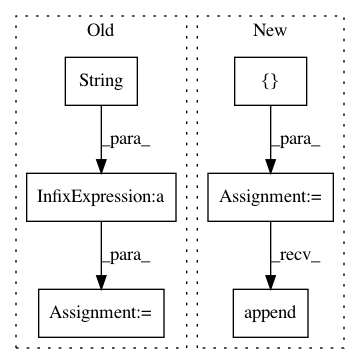

c6418175813007be62406bfb35b42441202b017a,create_website.py,,get_latex_plot,#,189
Before Change
latex_str +=
\\addplot %s coordinates { % only_marks
for i in range(len(xs)):
latex_str += "(%s, %s)" % (str(xs[i]), str(ys[i]))
latex_str += " };"
latex_str +=
\\addlegendentry{%s};
% (algo)
latex_str +=
\\end{axis}
\\end{tikzpicture}
\\caption{%(caption)s}
\\label{}
\\end{figure}
% {"caption" : get_plot_label(xm, ym)}
return latex_str
def get_latex_html(all_data, xn, yn, xm, ym, plottype, additional_label):
return
After Change
args = parser.parse_args()
def get_latex_plot(all_data, xn, yn, xm, ym, plottype, j2_env):
plot_data = []
for algo in sorted(all_data.keys(), key=lambda x: x.lower()):
xs, ys, ls, axs, ays, als = \
create_pointset(prepare_data(all_data[algo], xn, yn), xn, yn)
plot_data.append({ "name": algo, "coords" : zip(xs, ys),
"scatter" : plottype == "bubble" })
return j2_env.get_template("latex.template").\
render(plot_data = plot_data, caption = get_plot_label(xm, ym),
xlabel = xm["description"], ylabel = ym["description"])
In pattern: SUPERPATTERN
Frequency: 3
Non-data size: 6
Instances
Project Name: erikbern/ann-benchmarks
Commit Name: c6418175813007be62406bfb35b42441202b017a
Time: 2018-03-03
Author: maau@itu.dk
File Name: create_website.py
Class Name:
Method Name: get_latex_plot
Project Name: scikit-learn/scikit-learn
Commit Name: f4cd388569dca52e0af7b4a0d83cd87072be6c76
Time: 2020-07-10
Author: g.lemaitre58@gmail.com
File Name: examples/neural_networks/plot_mlp_alpha.py
Class Name:
Method Name:
Project Name: scikit-learn-contrib/categorical-encoding
Commit Name: 9da9c8edd24bede6eeeeea8739835ea53ca58cbc
Time: 2018-10-21
Author: jcastaldo08@gmail.com
File Name: category_encoders/one_hot.py
Class Name: OneHotEncoder
Method Name: reverse_dummies